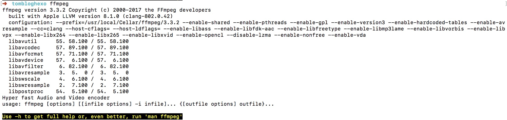
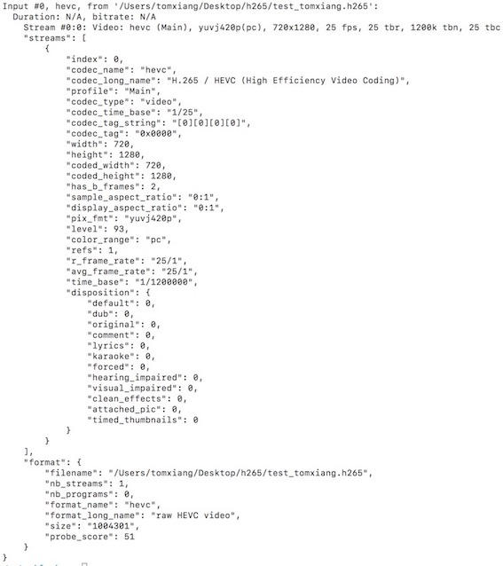
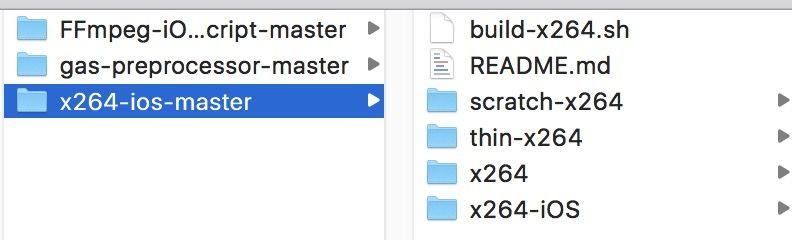
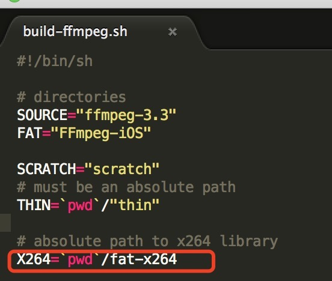
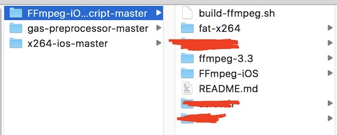
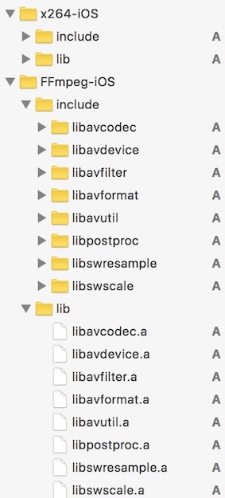
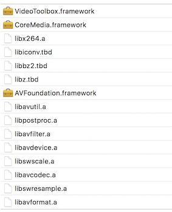

iOS编解码入门篇(FFMPEG环境搭建)
前言
一直很想做一个长期的专题介绍，既然已经转做直播软件了，对这一块也很有兴趣。接下来会做一些自己在编解码的分享与体会。欢迎大家共同探讨。
一.iOS编解码介绍
1. 硬编解码和软编解码
iOS上编解码分为两种，硬编解码和软编解码。
| 类型 | 工具 | 硬件支持 | 后台 | 思路 | |
|---|---|---|---|---|---|
| 硬编解码 | VideoToolBox | 非CPU或者专用处理器 | 编码(iOS>=10.0),解码不支持 | VideoVTToolBox | |
| AVAssetWriter | 非CPU或者专用处理器 | 支持编码 | 需要将视频写入本地文件，然后通过实时监听文件内容的改变，读取文件并处理封包 | ||
| 软编解码 | FFmpeg | CPU | 支持 | ————- |
二.Mac上FFmpeg环境搭建
1. mac上安装FFmpeg
如果已经用brew安装的方式是
1 | brew install ffmpeg |
建议先卸载掉->brew uninstall ffmpeg,因为上诉安装方法会丢失很多功能。详情可以看官方介绍
wiki:CompilationGuide/MacOSX
故而用以下命令重新安装
1 | brew install ffmpeg --with-fdk-aac --with-tools --with-ffplay --with-freetype --with-libass --with-libvorbis --with-opus --with-libvpx --with-x265 |
安装完可以用命令行查看是否安装成功。

2. 常用命令
1.ffmpeg的常用库
| Left Aligned | Center Aligned |
|---|---|
| ffmpeg | 一个命令行工具，用来对视频文件转换格式，也支持对电视卡即时编码 |
| ffserver | 一个HTTP多媒体即时广播流服务器，支持时光平移 |
| ffplay | 一个简单的播放器，基于SDL与FFmpeg库 |
| libavcodec | 包含全部FFmpeg音频/视频编解码库 |
| libavformat | 包含demuxers和muxer库 |
| libavutil | 包含一些工具库 |
| libpostproc | 对于视频做前处理的库 |
| libavutil | 包含一些工具库 |
| libswscale | 对于视频作缩放的库 |
2.主要参数
参数明细可用ffmpeg -h显示；编解码器名称等明细可用ffmpeg -formats显示.
| 主要参数 | 意义 |
|---|---|
| -i | 设置输入档名。 |
| -f | 设置输出格式。 |
| -y | 若输出文件已存在时则覆盖文件。 |
| -fs | 超过指定的文件大小时则结束转换。 |
| -ss | 从指定时间开始转换。 |
| -t | 从-ss时间开始转换（如-ss 00:00:01.00 -t 00:00:10.00即从00:00:01.00开始到00:00:11.00）。 |
| -title | 设置标题。 |
| -timestamp | 设置时间戳。 |
| -vsync | 增减Frame使影音同步。 |
| 视频参数 | 意义 |
|---|---|
| b:v | 设置视频流量，默认为200Kbit/秒。（单位请引用下方注意事项） |
| r | 设置帧率值，默认为25。 |
| s | 设置画面的宽与高。 |
| aspect | 设置画面的比例。 |
| vn | 不处理视频，于仅针对声音做处理时使用。 |
| vcodec( -c:v ) | 设置视频视频编解码器，未设置时则使用与输入文件相同之编解码器。 |
| 声音参数 | 意义 |
|---|---|
| b:a | 设置每Channel（最近的SVN版为所有Channel的总合）的流量。（单位请引用下方注意事项） |
| ar | 设置采样率。 |
| ac | 设置声音的Channel数。 |
| acodec ( -c:a ) | 设置声音编解码器，未设置时与视频相同，使用与输入文件相同之编解码器。 |
| an | 不处理声音，于仅针对视频做处理时使用。 |
| vol | 设置音量大小，256为标准音量。（要设置成两倍音量时则输入512，依此类推。） |
3.ffprobe
一般我自己看一个编码后的文件是否正确就用以下命令，如果格式错误的话会输出一堆Error。
1 | ffprobe -show_frames /Users/tomxiang/Desktop/h265/test_tomxiang.h265 |
如果想看JSON格式的话可以用
1 | ffprobe -print_format json -show_format -show_streams -i /Users/tomxiang/Desktop/h265/test_tomxiang.h265 |
可以看到如图所示:

4.ffmpeg
查看h265的数据的基本信息
1 | ffmpeg -i /Users/tomxiang/Desktop/h265/test_tomxiang.h265 |
用libx265转mp4.
1 | ffmpeg -i /Users/tomxiang/Desktop/test_tomxiang.h265 -c:v libx265 /Users/tomxiang/xxtest/test265.mp4 |
5.ffplay
ffplay逐帧播放视频与显示视频帧序号
目前使用这个功能检查部分画面不正确视频的原因。macOS下使用ffplay，按下s键可单帧播放视频，配合一个显示文字的视频滤镜即可显示当前画面的帧序号，命令示例如下所示。
1 | ffplay -vf "drawtext=fontfile=/Library/Fonts/Arial.ttf:text=%{n}:box=1:x=(w-tw)/2:y=h-(2*lh)" sample.mp4 |
三.编译支持iOS版本的h264编解码的FFmpeg
所需工具如下
1、gas-preprocessor
2、yasm
3、FFmpeg-iOS-build-script
1.找个目录新建一个文件夹h264
2.下载gas-preprocessor
它是编译 FFmpeg 的所需脚本文件,然后需要将其拷贝斤bin文件夹，使用命令
1 | cp -f /Users/tomxiang/h264/gas-preprocessor-master/gas-preprocessor.pl /usr/local/bin/ |
完了之后可以进/usr/local/bin/里面查看是否有这个文件。
3.安装yasm
Yasm是一个完全重写的 NASM 汇编。目前，它支持x86和AMD64指令集，接受NASM和气体汇编语法，
产出二进制，ELF32 ， ELF64 ， COFF ， Mach - O的（ 32和64 ），RDOFF2 ，的Win32和Win64对象的格式，
并生成STABS 调试信息的来源，DWARF 2 ，CodeView 8格式。
安装命令
1 | brew install yasm |
如果安装失败可以直接下载安装
1 | curl http://www.tortall.net/projects/yasm/releases/yasm-1.2.0.tar.gz >yasm.tar.gz |
4.下载x264-iOS编译脚本以及源码
下载编译脚本，然后下载最新版源码,下载完后改名成x264放到x264-ios-master文件夹中。为什么要改名呢？看看编译脚本就自然清楚了，编译脚本中是当前目录的x264文件。
然后执行命令:
1 | ./build-x264.sh |
执行完成之后可以看到生成了x264-iOS文件夹。

5.下载FFmpeg-iOS-build-script
查看并修改脚本内容。

并将
1 | 1 CFLAGS="$CFLAGS -mios-version-min=$DEPLOYMENT_TARGET -fembed-bitcode" |
如果所示，x264必须在当前目录并且命令为fat-x264,所以我们第4步生成的x264-iOS文件夹改名成fat-264，放在FFmpeg-iOS-build-script这个文件夹中。目录结构如下:

四. 完成xcode的编译
本来以为拖进.h和.a然后配置好.就能跑成功了。还是有一点问题的。具体可以参考我图片的配置. 然后修改一个.m文件为.mm编译一把再改回来。OK，大功告成！
 
1 | Header Search Paths: |
测试代码如下:
1 |
|